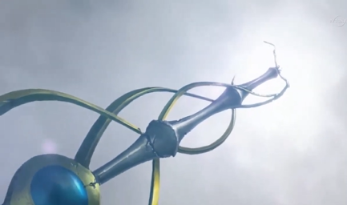
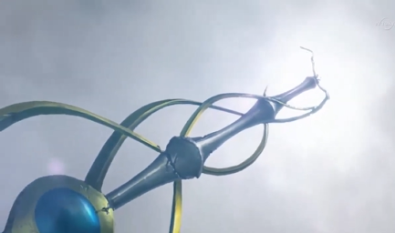

Ruri
 asked, curious about the light around them.
asked, curious about the light around them.
Ruri: What's this?
Ruri
asked, curious about the light around them.
Yuma : This is how we will be getting aboard. We're ready
Astral
: This is how we will be getting aboard. We're ready
Astral ! Beam us up!
! Beam us up!
Yuto and Ruri: Who's Astral?
Ruri and Yuto both asked. Yuma smiled at them.
Yuma: You'll see.
He said as the light around them turned red right before taking them.

The next thing Yuto and Ruri saw, they were in a huge high tech room that resembled the bridge of a starship.
Ruri: Incredible.
Ruri gasped.
Yuto: Where... are we?
Yuto asked in awe.
Astral: You and Ruri are aboard the Different Dimension Airship .
.
The pair turned to see a being that glowed blue and floated at the center control board. The sight of him nearly frightened them.
Yuto: Who or what are you?!
Yuto yelled, instantly standing in front of Ruri to protect her.
Astral: My name is Astral. No need to be alarmed, Yuto. I am a friend of Yuma and have no intention of harming either one of you.
Astral said to him and Ruri in a calm voice.
Ruri: Astral? The same person you talked to just before we came in here?
Ruri asked Yuma, more curious than scared of the guy. The boy nodded.
Yuma: Yep, that's him alright. I also talked to him before when we were running, but you couldn't see him until now. He can be a bit cold at times, but he's a really good guy.
Yuma replied reassuringly.
Astral: Now that we've met, I strongly suggest you all take your seats. We are about to depart.
Astral advised as he now focused on the controls, making the ship move again. Immediately the trio found the nearest seats.
Yuma: We're ready.
Yuma said.
Astral: Good. Hang on!
Disait Astral, éloignant maintenant le vaisseau de Heartland.
Astral said, now moving the ship away from Heartland. Yuto and Ruri held on to their seats as they felt the huge vessel in motion. They then noticed the screen in front of the bridge. They saw their ruined home moving away from sight as a bright light formed in the center of the screen. The ship vibrated as they sped up. Seconds felt like hours as the light became brighter and the ship continued to shake. Yuto took Ruri's hand and held it tight, while Ruri held her grip on his hand.
The next thing they saw, their home vanished from the screen and was replaced with the sight of swirling colors.
Ruri: Where are we now?
Ruri asked after the vibrating stopped.
Astral: We have left the Xyz Dimension, as well as the world it was a part of. According to my calculations, we will reach our destination in less than thirty minutes.
Astral revealed. This announcement stunned the pair.
Yuto: What do you mean we have left our world? Where exactly are we going?
Yuto demanded as he stood up again, wanting answers. Astral turned around to face the ship's newest occupants to answer, but Ruri got there first.
Ruri: Yuto, I asked Yuma that same question earlier while running to Heartland Tower. He told me it was a place similar to our home before it was invaded, where
Academia could never find us.
Astral nodded.
Astral: That is correct. To be more precise, we actually ARE going to Heartland. However...
Astral added as he held up a hand, seeing that Yuto and Ruri were about to interrupt.
Astral: I must point out that the Heartland we are heading to and the one we've just departed have more differences than just how the places themselves look. There
are people there that had never existed in your world. Another fact, you might meet a... "certain" someone there you both will recognize, but that person won't
know anything about you. That is because you two do not exist in "our" Heartland".
Astral explained. This revelation stunned the pair.
Yuto: Are you serious?
Yuto asked in disbelief, with Astral replying with another nod.
Ruri: When you said "our" Heartland, do you mean... ?
Ruri asked as she turned to Yuma, who nodded as well.
Yuma: Yeah. The Heartland we're going to is my home. The world where "that" Heartland is... is where Astral and I are both from.
Yuto and Ruri continue to be surprised by these new details.
Yuto: How can you be so sure Academia won't find us there?
Yuto asked, still weary.
Astral: Our world and yours are not within the same universe. A barrier constantly keeps our universes separated. As far as
Akaba Leo is concerned, the world in which the Four Dimensions reside is the only one in existence. Even if he becomes aware that there are other worlds and universes beyond
his own, he does not have the capability to track us or travel beyond the barrier.
is concerned, the world in which the Four Dimensions reside is the only one in existence. Even if he becomes aware that there are other worlds and universes beyond
his own, he does not have the capability to track us or travel beyond the barrier.
Ruri: Then how were you able to do it?
Astral: This ship was recently upgraded with the ability to bypass the barrier, reach your universe and your world. It is quite a remarkable achievement.
Astral commented, still impressed by that fact. Yuto and Ruri then fell silent, letting all this new information sink in.
They were actually going to a Heartland that would be similar but different at the same time. Whatever the differences were, Ruri hoped she and Yuto could adjust to living there until the time came to return to their own world. After a moment, another question came to Yuto's mind.
Yuto: Astral, where exactly in this world of yours are you from?
Astral: I originated from the
Astral World . A place outside the Earth where Heartland is located. Humans could call that place "Heaven", where pure souls travel to when they die.
. A place outside the Earth where Heartland is located. Humans could call that place "Heaven", where pure souls travel to when they die.
Yuto: Then... there is a place like "Hell"?
He asked, starting to feel unnerved. Astral nodded once more.
Astral: Indeed, or rather there used to be. The place you would be referring to was known as the Barian World . Originally, the two worlds were one before being split apart. For thousands of years, the two worlds were constantly at war, trying to destroy one another. But thanks to the combined work of Yuma, myself, and our friends, the war had finally stopped and the two worlds became one again.
Yuto: How?
Astral: There is a card powerful enough to alter reality itself, called the Numeron Code . It was by the power of this card that the Astral World and Barian World were rejoined.
Yuto: A card that can change reality?! That's unbelievable!
Yuto exclaimed. He then turned to Ruri, who hadn't spoken for a while now.
Yuto: Ruri? What's wrong?
The girl looked really troubled when she spoke again.
Ruri: I'm sorry Yuto. I did hear everything Astral had said. It's just that...
She hesitated for a second.
Ruri: I can't stop thinking about my brother, or the guy he was dueling when we left.
Yuto: Yuri .
.
He said, saying the name with hate. With all this talk about traveling to other worlds, he had completely forgotten about
Shun , and that he was the reason
Yuto and Ruri got away with Yuma.
, and that he was the reason
Yuto and Ruri got away with Yuma.
Yuto: Ruri, I'm sure your brother is fine. Shun is one of the toughest fighters in the Resistance. We shouldn't worry about him.
Ruri somehow didn't feel so sure as she continued.
Ruri: It's not just that. I'm still disturbed by the fact that Yuri... had the same face as you.
Ruri said, fear in her voice now. Yuma and Astral glanced wearingly at each other, though Yuto and Ruri didn't notice. Yuto then looked unsettled himself.
Yuto: Yeah, I still cannot believe it. How can there be someone from the Fusion Dimension that looks like me? How is it possible?
He asked himself.
Yuto: In fact, we still don't even know why Academia is after you.
Yuto pointed out, making Ruri wrap her arms around herself, looking afraid. Yuto then turned to Yuma and Astral.
Yuto: You both know the truth, don't you? Why does Yuri look like me? And why does the Professor of Academia want Ruri? Tell us!
The pair looked at one another again before Astral answered.
Astral: Both questions have a long story to go with the answers. You two will have to wait to learn everything, but we can give you a basic idea now. Yuto...
Astral then addressed to Yuto only.
Astral: The reason you and Yuri share a strong resemblance is because you two have a unique connection that neither one of you are aware of... a connection that
comes with a rather dark history.
This left Yuto rather shaken.
Yuto: A... dark history?
He said in an unsteady voice. He couldn't possibly imagine what that meant, but he didn't like the sound of it. Ruri too worried about what this meant for Yuto. Yuma
then kind of answered the question regarding Ruri herself.
Yuma: Ruri, Akaba Leo wants to capture you because he needs you for a plan to bring back someone he lost a long time ago. The thing is, though... that plan would definitely kill you. That's why I had to rescue you.
Ruri paled from this brief explanation, and Yuto looked at her with more worry than he had ever shown. She then began to shake from fear, her arms still wrapped around herself.
Ruri: That's why... I'm a target?
She then looked to Yuto with wide, fearful eyes.
Ruri: Yuto, why is all this happening? It's like a bad dream coming true. And the worst part of all this... is the person Academia's Professor sent to capture me... was someone resembling you.
Yuto then hugged Ruri tight, who hugged him back instantly. His warmth eventually helped calm her down. She always felt better when Yuto was this close to her, helping her feel everything will be alright.
Yuto: Ruri, I'm not him. I'm me. Nothing will ever change that. You never have to be afraid of me.
Yuto said in a reassuring tone. Ruri looked up at him with a grateful, loving smile.
Ruri: I'm not afraid, Yuto. I could never fear the man I love.
Yuto gasped with wide eyes.
Yuto: What did you... just say?
He asked in shock, now starting to blush. Ruri then moved her face closer to Yuto's.
Ruri: I said... that I love you, Yuto.
She whispered before she pressed her lips on his. Nothing, not even learning that there was another person who shared his face, had surprised him more than this. He had never once dreamed that he would be kissing his best friend's younger sister. True, Yuto did have strong feelings for Ruri, but he always felt too chicken to make any moves. He feared Ruri's overprotective brother would murder him in his sleep if he did. Right now, though, Yuto didn't care what Shun would do as he closed his eyes and returned the kiss.
Yuma immediately turned around, feeling embarrassed at the scene. He then noticed Astral wasn't doing the same. He just seemed mildly curious about the new couple's latest action.
Yuma: Astral, turn around! Don't stare at them while they're doing that!
He whispered hastily.
Astral: Why would I turn away? I don't see the problem?
Astral replied indifferently. Yuma groaned.
Yuma: Astral, people don't like to be watched when they're kissing! It's an invasion of privacy!
Astral merely tilted his head.
Astral: An invasion of privacy?
Astral questioned.
Yuma: Uh, yeah! On Earth, when a boy and a girl kiss, they'd rather be alone with no witnesses! Otherwise it would be really humiliating and awkward!
Yuma explained.
Astral: If that is the case, then how come Yuto and Ruri are kissing in front of us? Why did they not seek privacy before hand?"
Yuma groaned again, knowing Astral got him.
Yuma: Don't ask me!
The boy angrily retorted. Astral then took on an amused expression.
Yuma: What?
Astral: You have never kissed a girl yourself, have you Yuma?
Yuma blushed at the question.
Yuma: What the hell's that got to do with anything?!
He freaked out. Astral chuckled at his friend's reaction.
Astral: Perhaps you should experience it yourself, and maybe then you would have the answer.
Astral's latest reply almost made Yuma want to strangle him... almost.
Yuma: I'm not talking about this anymore!
Yuma then walked away, having enough of Astral's teasing. Throughout their argument, Yuto and Ruri never broke their kiss. They were too wrapped up in their own love and passion to notice anything around them. After what seemed like an eternity, they finally separated. Both smiled at each other.
Yuto: I love you too, Ruri.
Yuto said softly, caressing his new girlfriend's face with his hand. Ruri held her hand on top of his, enjoying the touch.
Yuto: No matter what we face in this new Heartland, we will face it together.
Ruri nodded, agreeing with him completely.
They then finally notice that Yuma was no longer in sight.
Ruri: Where's Yuma?
Ruri asked Astral.
Astral: He felt he needed some... privacy.
He said vaguely with a small smile. Yuto and Ruri looked confused, not knowing what he meant. Before either of them could ask for specifics, they heard a loud beeping sound.
Yuto: What's that?
Astral: That sound means we have arrived.
Once more, the big screen in front had changed. This time, it revealed a sign that Yuto and Ruri had not seen a long while. A sight that left them overwhelmed.
Astral: Welcome... to
Heartland .
.
???: Good morning young whipper snappers, who's hungry?
Asked a kind, little old woman as everyone came down for breakfast. Yuma, Yuto, Ruri, and a young woman with dark, long red hair sat down at a big table as the older woman handed everyone pancakes and bacon.
After arriving from their trip, Yuma invited Yuto and Ruri to spend the night at his house and discuss temporary living arrangements tomorrow after giving them a tour
around his Heartland. The couple initially refused, not wanting to be a burden to him, but Yuma wouldn't take no for an answer. They finally agreed and went over to
his home, where he introduced them to his older sister,
Akari, and his grandmother,
Haru .
.
Yuma told his family that Yuto and Ruri were visitors from out of town and they had no place to go. Akari didn't like the idea of bringing in complete strangers to stay the night, but Haru seemed much more reasonable. Akari eventually gave in and allowed Ruri to stay in her room and Yuto in Yuma's room, while she and Yuma slept in their parents' bedroom. They all got a surprisingly good night's sleep and woke up to the smell of hot food cooking downstairs the next morning.
Yuma: Thanks Baa-chan! Everything looks so good!
(Baa-chan = Grand mother)
Yuma said excitedly, his mouth practically drooling. Akari groaned as she slapped him in the back of the head.
Akari: Yuma, show better manners! We have guests here for crying out loud!
he yelled in annoyance.
Ruri: It's okay, Akari. This really does smell delicious.
Ruri said as she smelled the delicious aroma of the food.
Ruri: Thank you, Mrs. Tsukumo.
Yuto: Yes, it does. It's actually been a while since we had food like this. Thank you.
Yuto added, sounding grateful. The old woman chuckled.
Haru: Just call me Haru, dearies. And you're quite welcome. Eat up!
She encouraged as the whole group began to eat.
Akari: So you two, tell us about yourselves. Where exactly did you come from?
Akari asked in a professional manner. Yuto and Ruri glanced at each other, looking anxious. Yuma had warned them last night that his older sister was a journalist, meaning she would most definitely ask questions that had to make them feel uneasy.
Ruri: Well, um... that's sort of... hard to explain.
Ruri said with a nervous smile as she took a bite out of a syrup drenched pancake.
Akari: How so?
Akari questioned, raising an eyebrow.
Yuto: Our home... is kind of a... touchy subject. We'd rather not talk about it.
uto replied, sweating a bit while crunching on a strip of bacon. This really got Akari's investigative nature fired up.
Akari: Okay, now I've just gotta know. What are you two hiding?
Akari interrogated further.
Yuma: Come on Nee-chan! Leave them alone!
(Nee-chan = Big Sister)
Yuma said, trying to protect them.
Akari: It's a perfectly reasonable question, plus we know nothing about these two.
She told her brother before refocusing on the young couple again.
Akari: Qu'est-ce qui pourrait être si mauvais chez vous pour que vous ne voulez pas en discuter ?
Ruri then looked away, making a sad face. Yuto felt he had no choice but to say something.
Yuto: If I tell you, will you please drop the subject?
Yuto said in such a serious voice that Akari seemed a little taken aback. Nevertheless, she nodded in agreement.
Akari: You have my word as a journalist. Now spill.
Yuto a fermé les yeux et a légèrement incliné la tête.
Yuto: The place we came from... was a hell hole. People from a far away nation attacked us without warning. They destroyed our homes and took the lives of many innocents. Those of us that survived had to learn to fight for our lives everyday ever since. Then, on the night we fled, one of the enemy's agents tried to take Ruri, but her older brother Shun fought him off long enough for us to escape. It wasn't long after that that we met Yuma, who was kind enough to bring us here to Heartland until we figure out what to do next.
Yuto explained as he opened his eyes again, looking sad. While he did technically tell the truth, he was careful to leave out certain details that would invite more unwanted questions.
Akari and Haru seemed horrified by Yuto's story, and they both could tell Ruri came close to crying. Yuma's older sibling immediately regretted her interrogation.
Akari: I... had no idea. I'm so sorry, especially to you Ruri.
Akari said with sorrow. She could understand Shun's position. She would also do anything to protect Yuma, even put her own life at risk. Akari wondered if Ruri's brother was alright, but refused to ask. Ruri then shook her head.
Ruri: No, it's okay. You couldn't have known.
She said, barely above a whisper. After that, everyone ate in silence. Feeling immensely guilty, especially after getting a hateful glare from her younger brother, Akari sighed as she decided to make it up to them.
Akari: Tell you what. Today happens to be my day off, so let me take you guys clothes shopping. From the looks of it Ruri, you and your boyfriend need a serious change in wardrobe.
She suggested, pointing out the torn and ragged looks they currently wore.
Ruri: I like that idea. It sounds nice.
Ruri answered, sounding more cheerful.
Yuto: So do I.
Yuto added, agreeing to the idea. With that settled, Akari took the younger kids out to the city once breakfast was over.
Haru: You youngsters have a good day!
Haru said as she waved them off. Next to her, a small robot also bid them farewell.
Obomi : Come back soon "Trash"!
: Come back soon "Trash"!
Said the robot, which had apparently upset Yuma.
Yuma: Stop calling me that, Obomi! I'm not "Trash"! Geez!
Yuma yelled angrily. Akari laughed, while Yuto and Ruri were clearly confused.
Yuto: What was that about?
Yuto asked.
Akari: Oh, Obomi has this habit of calling Yuma anything garbage related. It's kind of hilarious.
Akari said, still smiling.
Yuma: Not to me it isn't!
Yuma fumed.
By the time Yuma calmed down, the group had reached a mall near the city square. As they looked around, Yuto and Ruri were awestruck at just how much this Heartland
looked practically identical to the one they came from (in the old days, that is). The couple stopped outside the mall entrance to gaze at
Heartland Tower ,
remembering how their own version looked just before it was destroyed
from the Invasion. They hoped that one day, their home could be restored.
,
remembering how their own version looked just before it was destroyed
from the Invasion. They hoped that one day, their home could be restored.
Yuma: You guys okay?
Yuma asked. Yuto and Ruri nodded at him.
Yuto: Yeah, we're fine Yuma.
Yuto answered.
They then followed Akari inside. Once they reached a clothing store, Akari allowed Yuto and Ruri to pick their new threads. To their own delight, they found clothes that they used to wear before the Invasion took place. After showing their choices to her, Akari took them to separate dressing rooms to try them on. Yuma waited outside the men's dressing room, while Akari was at the women's.
Akari: How're you doing in there, Ruri? Does everything fit okay?
Akari asked after a minute.
Ruri: Yes, it all fits like a glove. Like I was wearing these just yesterday.
Ruri replied from inside. She then stepped out in her new attire. She now wore a simple yellow and white, knee-length dress with white shoes.
Akari: Well, don't you look cute.
Akari commented, earning a little laugh from Ruri.
Ruri: Thank you. I was actually wearing something like this when I met Yuto for the first time.
Akari: Was it love at first sight?
Akari teased, making the younger teen blush.
Ruri: You could say that.
Akari: So how did you and Yuto meet anyway?
Akari asked. At this, Ruri looked down, looking sad again.
Akari: Wait, if you don't want to tell me, that's fine! No need for the sad face again!
Akari panicked, but Ruri stopped her as she shook her head.
Ruri: No no, it's fine. My brother introduced us.
She said, still looking away. Akari gasped and looked away too. She didn't want to force Ruri to talk about her brother when she didn't even know if he was alive or not. However....
Ruri: Do you want to hear more about him?
Ruri tentatively asked, surprising the older woman.
Akari: Well, only if you want too.
Akari said, wanting to sound fair. Ruri then looked up at her.
Ruri: I do actually. Shun was about your age, tall and tough looking. He was also totally fearless and never hesitated to fight those that came after us. He always
looked out for me, before and after we lost everything.
Ruri said, remembering all the good things about him.
Akari: Your brother sounds like a good man.
Akari said with a warm smile. Ruri nodded.
Ruri: He is. I actually have a picture of us from the old days.
Ruri said as she searched the pockets of her old clothes and pulled out a slightly torn and faded picture of her, Yuto, and a tall young man with bluish black hair and yellow-green eyes. From the look of it, the photo had to have been taken before Yuto and Ruri's home was invaded.
Akari actually thought Shun looked pretty hot, but she would never say that in front of Ruri.
Akari: Good looking guy.
She ended up saying.
Ruri: I think you two would get along great.
Ruri said as the girls smiled at one another.
Meanwhile, at the men's side, Yuto just came out with his new attire. He now wore a black shirt under a black and cream-colored jacket, and a small pendent around his neck, and black shoes.
Yuto: What do you think?
Yuma: I think you'd fit right in.
Yuma said with a thumbs up, which Yuto gladly returned.
???: What the hell are you doing here?
Yuma and Yuto turned behind them to see a few people approaching. The one who just talked was a boy that appeared a bit older than Yuma with blue eyes and purple hair that stuck up at the ends. He looked like he wanted to be anywhere but this place. With him were two girls carrying shopping bags. One girl had short, wavy green hair with orange hazel eyes while the other had dark pink eyes with long blue hair and light blue bangs in front.
Yuma: Oh, hey
Shark ! Kotori
! Kotori ! And Shark's sister !
! And Shark's sister !
Yuma greeted. The blue haired girl looked annoyed.
"Shark's sister": Come on Yuma! We've known each other for a while now! Why is it so hard for you to call me by my name?
She asked. Yuma flinched.
Yuma: I don't know. It's just how I know you, I think.
Yuma said, still smiling. The girl huffed in response.
Yuma: Anyways, why're all of you here?
He asked. The other boy, called Shark, groaned.
Shark: I asked you first. But if you must know, these two insisted on updating their wardrobe for who knows what. Unfortunately, I'm stuck escorting them.
He said pointing behind him with his thumb.
Kotori: We told you! It's for the camping trip tomorrow, so we need some more outdoor attire.
Kotori, the green haired girl, answered in an annoyed voice.
Shark: Like I care about that.
Shark said, clearly hating shopping for clothes.
Yuto: What's so bad about a camping trip?
Yuto asked, finally getting the other's attention.
Kotori: Who are you?
Kotori asked. Yuma then stood beside him as he introduced him to the newcomers.
Yuma: Guys, this is Yuto. He's new in town. My sister and I came here to find him some new clothes too. Yuto, these are my friends: Kotori, Shark, and his younger sister.
The blue haired girl sighed again as she turned to Yuto.
Rio: My name is
Rio Kamishiro
. Ryoga
here is my twin brother.
Rio said, tilting her head at Shark.
Shark: Hi.
Shark said uncaringly.
Kotori: Hi Yuto. Welcome to Heartland.
Kotori kindly greeted.
Yuto: Thanks. It's nice to meet all of you. But Yuma called you Shark, right?
Yuto asked the other boy.
Shark: Shark is just a nickname. I don't mind if you call me that.
Kotori: Yuma, we haven't seen you around lately. Everything alright?
Kotori asked. Yuma just chuckled.
Yuma: Oh, you know me! I'm always in the middle of something!
Shark: That's what I'm afraid of.
Shark muttered.
Akari: Hey Yuto! Check out your lady friend here!
Yuto and the gang looked to see Akari and Ruri come up to them. At once, Yuto blushed at the sight of Ruri. It was like seeing her for the first time all over again.
Ruri: How do I look Yuto?
Ruri asked. Yuto walked over to her and smiled.
Yuto: Like a dream come true.
He said warmly, making her blush.
Ruri: Same to you.
She replied. Shark almost gagged.
Shark: I take it she's your girlfriend?
He asked, getting Ruri's attention.
Ruri: Are they friends of yours?
She asked.
Yuto: Actually, they're friends of Yuma's.
Yuto corrected as he introduced her.
Yuto: Everyone, this is my girlfriend, Ruri Kurosaki. Ruri, meet Ryoga, his sister Rio, and Kotori.
Ruri: Hello.
Ruri said politely as she bowed. After all the introductions were made, Akari asked Yuto if his new clothes fit fine. She was satisfied that they did.
Akari: I'm glad to hear it. If we're all done here, let's get your new threads in some bags and head to the checkout line.
Akari then lead the way.
After they all left the clothing store, Yuto asked Akari more about this camping trip Kotori mentioned.
Akari: Oh, it's become sort of a group thing. If you like, you and Ruri can come with us. I think you two would love it.
She highly suggested. Yuto and Ruri looked at each other and agreed. After all the pain and chaos they've been through in their Heartland, this camping trip sounded like the best idea to them.
Ruri: Sure Akari, we'd love to come.
Ruri said happily.
Akari: Then it's settled. You better get into bed early tonight, cause we're heading out there at the crack of dawn!
Akari announced. This made nearly everyone groan.
Yuma: That's the one thing about these trips I'm not looking forward to.
Yuma grumbled, making most of the others laugh. As the gang made their way through the city, they got to know Yuto and Ruri more and started to like them. Of course, the couple didn't bring up about where they came from and what had happened. It had been painful enough for Yuto to explain it to Yuma's sister and grandmother.
When Shark did ask about it, Akari strictly told him to drop it and leave it at that. Although curious, Kotori, Shark, and Rio respectively did not question further. They were close to Yuma's home when they bumped into a couple more old friends of Yuma's...
???: Hey Yuma!
Yuma and the group stopped and turned to see an older man with flaming red hair sticking up walking up to them. Following him was a black haired woman with light purple bangs around his age, looking annoyed. Yuto and Ruri wondered who they were.
Yuma:
Gauche ! What brings you out here?
! What brings you out here?
Yuma asked, happy to see his friend/rival.
Gauche: I was actually on vacation and thought I'd stop by to finally have a chance to settle our old score. And lo and behold, here you are!
Gauche said excitedly.
???: You just can't let it go, can you?
Said the woman accompanying him. Gauche pouted at her.
Gauche: Oh loosen up,
Droite . I can have some fun, can't I?
. I can have some fun, can't I?
The woman, Droite, shook her head.
Yuto: Do you know them Yuma?
Yuto asked.
Yuma: Sure do. Gauche is a Duel Monsters Champion in Spartan City, and Droite there is his manager. We actually go way back.
Gauche: Oh, I see some new faces here.
Gauche said curiously, seeing the Xyz pair for the first time.
Yuto: "We've only arrived here just yesterday. I'm Yuto.
Yuto said politely.
Ruri: My name is Ruri. Yuto is my boyfriend.
She said with a warm smile, making Yuto blush.
Droite: Nice to meet you two.
Droite said, seeing how cute they looked together. She wished a certain guy she knew would see her the way Yuto looked at Ruri...
Gauche: So, how about that rematch Yuma?
Gauche asked again. Yuma then had a better idea.
Yuma: Sure... only if you beat Yuto here!
Yuma suggested, pushing Yuto forward slightly.
Yuma: Yuto is a great Duelist where he comes from. If you can get past him, then we can have that rematch.
The young boy suggested. This act caught Yuto and Gauche by surprise, more so for the former.
Yuto: Wait, Yuma! What are you doing?! I didn't agree to this!
He demanded. Yuma chuckled.
Gauche tilted his head a bit curiously.
Gauche: So you're a Duelist too, Yuto? You must be good if Yuma thought you'd be a challenge for me! I don't mind taking on some new blood! I'd be happy to accept if you do!
Gauche said, sounding fired up.
Droite: Oh great, there's no stopping him now.
Droite said to herself.
Yuto: Yuma, why are you doing this?!
Yuto argued.
Yuma: Come on, Yuto! When was the last time you dueled for fun? I think this would be good for you!
Yuma said with a bright smile.
Yuto: Duel... for fun?
The older Duelist asked himself.
Ruri: I agree with Yuma. It has been a long time since either of us had dueled for the fun of it. Please Yuto.
Ruri insisted.
Yuto then thought about it for a moment, and realized Ruri and Yuma were both right. All his recent Duels had been not for entertainment, but for survival in a war torn city. He looked at the others and they seemed to agree as well.
Kotori: Go on Yuto.
Kotori encouraged.
Rio: Show us what you're made of.
Rio said.
Shark: You would be a coward if you refuse.
Shark warned.
Akari: I really don't see why you shouldn't.
Akari said. To Yuto's surprise, Astral reappeared beside Yuma and nodded.
After a moment of contemplation, Yuto nodded too, finally agreeing as he turned back to Gauche.
Yuto: Alright, Gauche. I accept.
Gauche smiled big time.
Gauche: Great! Let's do this Yuto!
He said as he not only slipped on and activated his Duel Disk, but also had a red tattoo appear around his left eye. Knowing what to expect, Yuto placed a small device over his left eye before slipping on and activating his Duel Disk.
Gauche and Yuto: Duel Disk Set! D-Gazer Set!
Both Duelists declared.
Before arriving the previous night, Yuma explained to Yuto and Ruri about
D Gazers, Augmented Reality Duels
and how they worked. Astral then used the ship's systems to modify the Xyz pair's
Duel Disks (with functions as D-Pads) so that they be would no different from the ones in the new Heartland and gave each of them their own
(with functions as D-Pads) so that they be would no different from the ones in the new Heartland and gave each of them their own
D-Gazers. Yuto's was black with a
purple colored lens. Yuma and the others then wore their own D-Gazers (minus Astral, who didn't need one) to watch the action. Ruri's was a brighter purple with a
yellow lens.
Computer Voice: AT Vision, Link established.
Said a computer voice from the combatants' Duel Disks as a new virtual environment appeared around them. Yuto and Ruri were impressed by the VR tech in this world.
Gauche: I'll go first! My Turn! Draw!
Turn 1: (Yuto: 4000 LP / Hand: 5)(Gauche: 4000 LP / Hand: 6)
Gauche looked at his hand and decided to see what his new opponent would try. Yuto was also informed that, unlike in his world, the Duelist who went first could Draw. So therefore, this didn't surprise him.
Gauche: First, I Summon
“Heroic Challenger Double Lance ”
!
A white armored soldier wielding two lances now stood to oppose Yuto.
Gauche: Then I Set 1 card facedown and end my turn. Now then, show me your skills, Yuto!

Yuto nodded.
Turn 2: (Yuto: 4000 LP / Hand: 6)(Gauche: 4000 LP / Hand: 4)
Yuto: He's testing me. I should be prepared for an attack.
He thought
I Set 4 cards facedown, then I play “Oarashi ” ! This destroys all Magic and Trap cards on the Field!

Everyone watched in surprise as Yuto destroyed not just Gauche's facedown card, but the four he himself Set as well.
Yuto: With that, I end my turn.
Kotori: What the heck? Why would Yuto destroy his own cards just to get rid of Gauche's? It makes no sense.
Kotori wondered. Well, almost everyone was surprised.
Yuma, Astral, and Ruri knew full well what he was planning. Gauche himself was confused.
Gauche: I can't believe he just threw away his own cards just like that. What is he thinking?
He figured he must have had a reason... as reason he would soon find out.
Gauche: That wasn't a very smart move. You are wide open now! My turn! Draw!
Turn 3: (Yuto: 4000 LP / Hand: 1)(Gauche: 4000 LP / Hand: 5)
He figured it was time for some heavy damage.
Gauche: I Summon
“Heroic Challenger Extra Sword ”
!
Now a white and green armored man holding two swords still next to it's fellow Monster.
Gauche: When I'm about to Xyz Summon a Warrior Xyz Monster, “Double Lance ” can be used as 2 Materials! I Overlay the Level 4 “Double Lance ” and “Extra Sword ” ! With these monsters I build the Overlay Network! Xyz Summon! Rise, “Heroic Champion Kusanagi ”!

Before Yuto now stood a Samurai in brown and orange armor holding a flaming sword.
Rio: Gauche is not taking it easy on Yuto, is he?
Rio asked Ruri. To her surprise, she didn't seem worried about her boyfriend.
Ruri: No, Yuto can handle this.
Ruri replied confidently.
Gauche: Now the Effect of
“Extra Sword ”
! While it is an Xyz Material, the Xyz Monster it is attached to gains 1000 Attack Points!
Gauche revealed as his Monster grew stronger.
(Heroic Champion - Kusanagi: 2500 + 1000 = 3500 ATK)
Yuto wasn't really worried by this.
Gauche: Alright
“Kusanagi ”
, let's do this! Direct Attack!
Kusanagi then tightly gripped his sword and ran towards Yuto to deliver a heavy blow.
Yuto: I activate the “Phantom Knights Shadow Veil ” in my Graveyard! When I'm about to receive a direct attack while this card is in my Graveyard, I can Special Summon as many copies of this Magic card as possible to my Field as Normal Monsters!
Yuto then Summoned in Defense Mode three identical black knights on black horses, both horse and rider wreathed in blue flames.
Yuto: When they leave the Field, they are banished instead of being destroyed!
Gauche was surprised, along with most of the others.
Gauche: That was a move I certainly didn't expect! Nicely done! In that case, I'll just attack one of your knights!
“Kusanagi ”
, attack the
“Shadow Veil ”
on the left!
“Kusanagi ” then slashed that “Shadow Veil ”. to pieces. Because it was in Defense Mode, Yuto did not take any damage.
Gauche: I then Set 2 cards facedown and end my turn. Now Yuto! Show us how you'll get out of this!

Yuto smiled now.
Yuto: I think you will like what I have in mind. My turn! Draw!
Turn 4: (Yuto: 4000 LP / Hand: 2)(Gauche: 4000 LP / Hand: 2)
With his drawn card, Yuto was all set to begin his attack.
Yuto: I now Overlay my two Level 4
“Shadow Veil ”
!
Formed from pitch-black darkness, to fight those foolish enough to oppose it with its treacherous fangs! Now, descend! Xyz Summon! Rank 4!
“Dark Rebellion Xyz Dragon ” !
A ferocious, serpentine dragon of black and dark purple roared as it descended onto the Field.
Rio: Is that Yuto's Ace?!
Rio said, slightly scared by the dragon's appearance.
Ruri: Yes, it is.
Ruri answered, not frightened at all.
Shark: I hate to admit it, but that thing is even giving me goosebumps.
Shark commented, sounding slightly unnerved.
Gauche: That's a hell of a dragon you've got there, Yuto, but it's not quite strong enough to take mine down!
Gauche reminded his opponent.
Yuto: We shall see. I activate the Magic card,
“Phantom Level Advance ”
. When we both have an Xyz Monster on the Field, your Monster's Rank is treated as a Level until the End Phase of your next turn! Also, when I have at least one
"Phantom Knights" card in my Graveyard, that Monster's Level is raised by one! During the turn this card is activated, I cannot Normal or Special Summon other
Monsters this turn!
(Heroic Champion - Kusanagi: Rank 4 -> Level 5)
Droite: He changed Gauche's Rank 4 Xyz Monster into a Level 5 Monster? Why would he do that?
Droite asked herself. Yuto again confused most of the group by his actions. They were starting to think of him as unpredictable.
Gauche: What is your plan, Yuto?
Gauche wondered in his mind. The answer came right away.
Yuto: I activate
“Dark Rebellion Xyz Dragon ”
's Monster's Effect! If my opponent has a Level 5 or higher Monster, by detaching one Overlay Unit,
“Dark Rebellion ”
can take half of that Monster's Attack Points and add them to it's own until the End Phase! Treason Discharge!
Aside from Ruri, Yuma, and Astral, everyone was very surprised the Effect of Yuto's dragon.
(Heroic Champion - Kusanagi: 3500 / 2 = 1750 ATK)
(Dark Rebellion Xyz Dragon: 2500 + 1750 = 4250 ATK)
Kotori: So that's why!
“Dark Rebellion ”
's Effect wouldn't work on another Xyz Monster, so Yuto had to find a way around that!
Kotori said in amazement.
Shark: The ability to weaken your opponent's Monster while strengthening your own at the same time... that's a very dangerous Effect to go up against.
Shark said wearily.
Yuma: Yep, Yuto is someone not to take lightly!
Yuma said joyfully. Gauche thought so too.
Gauche: So that's your play, huh? Well here's mine! Trap card open,
“Battler's Cry ”
! This Trap can be activated when the Attack Power of one of my opponent's Monsters changes due to a Monster Effect! As long as this card is in play, all of my
Warrior-type Monsters I control have their Attack Points
doubled!
Yuto was impressed as he saw
“Kusanagi ”
regain the power it just lost.
(Heroic Champion - Kusanagi: 1750 x 2 = 3500 ATK)
Rio: With that, Gauche will take less damage from Yuto's attack.
Ruri: I wouldn't say that.
Ruri said as she smiled, confusing the other girl.
Yuto: That's a good move, Gauche. However, I'm sorry to say that you've helped me more than you helped yourself.
Yuto said with regret.
Gauche: I've... helped you?
Gauche asked, not understanding what he heard.
Yuto: I detach the last Overlay Unit to activate once again “Dark Rebellion Xyz Dragon ” 's Effect! Treason Discharge!
(Heroic Champion - Kusanagi: 3500 / 2 = 1750 ATK)
(Dark Rebellion Xyz Dragon: 4250 + 1750 = 6000 ATK)
Gauche stared in shock as his Monster was weakened once more.
Shark: What?! Yuto can use his dragon's Effect more than once per turn?!
Shark exclaimed in shock.
Akari: 6000 Attack Points?! That's insane!
Akari said, not believing this.
Yuto: This is it Gauche! Battle!
“Dark Rebellion Xyz Dragon ”
attack
“Heroic Champion Kusanagi ”
!
Hangyaku no Lightning Disobey !
“Dark Rebellion ”
then flew forward with it's fangs open, sparking with electricity.
Droite: If “Dark Rebellion ” 's attack succeeds, Gauche will take more than 4000 points of Damage and lose the Duel!
Droite said in alarm. Gauche cursed himself for getting into this mess.
Gauche: I'm not going down that easily! I activate the Effect of
“Heroic Challenger Swordshield ”
in my hand! When I'm about to take Battle Damage of 2000 Points or more, by sending
“Swordshield ”
to the Graveyard, I can make my Life Points at 100 instead!
”
in my hand! When I'm about to take Battle Damage of 2000 Points or more, by sending
“Swordshield ”
to the Graveyard, I can make my Life Points at 100 instead!
Just then, a Warrior with thick green armor blocked “Dark Rebellion ” 's strike and saved it's master from defeat.
Yuto said, still smiling despite his attack failing to defeat his opponent. With his turn over, Dark Rebellion's Attack Power dropped back down to 2500.
(Dark Rebellion Xyz Dragon: 6000 ATK -> 2500 ATK)
Rio: Aw, Yuto was so close!
Rio said, disappointed.
Shark: But close doesn't cut it.
Shark said.
Astral: It is not over ye
Astral said to himself. Gauche then laughed, but in a joyful way.
Gauche: This is awesome! You truly are a force to be reckoned with, Yuto! I'm having a blast!
Yuto: So am I!
Yuto stated excitedly. It was true. Yuto was truly enjoying this Duel. It reminded him of the days before the Invasion where Duels would bring smiles to everyone, like Ruri told him. He was grateful he and Ruri had come to this alternate version of their home. His only regret was that Shun wasn't here with them to share this experience with...
Gauche: What's with the long face? Upset that you couldn't win this turn?
GGauche asked, noticing the sad face Yuto gave.
Yuto: No. It is nothing. Let's continue, shall we?
Yuto asked, inviting his opponent to come at him again.
Gauche: You got it! My turn! Draw!
Turn 5: (Yuto: 4000 LP / Hand: 1)(Gauche: 4000 LP / Hand: 2)
Gauche began to see a way to turn things around.
Gauche: I Summon
“Heroic Challenger Yashu no Kantera ”
.
Gauche's new Monster looked like an armored night guard wearing a cape and holding up a lantern.
Gauche: Next I activate my Trap,
“Copy Knight ”
. When I Normal Summon a Level 4 or lower Warrior-Type Monster to my Field, I can Special Summon this as a Normal Monster with the same name and Level as that Monster!
His Trap then became a second copy of “Yashu no Kantera ”.
Kotori: Gauche-san going to Xyz Summon again.
Ruri: Yes, but, I'm sure Yuto saw this coming too.
Ruri said, still not doubting her boyfriend's skills.
Yuto: That won't work! I activate this continuous Spell card in my graveyard,
“Phantom Death Spear ”
! When my opponent activates a Trap during their turn while this card is in the Graveyard, I can negate and destroy that Trap!
Yuto revealed, destroying Gauche's “Copy Knight ”.
Gauche: Dammit! Another Magic card that can be activated from his Graveyard?!
The Champion Duelist said annoyingly.
Yuto: And that's not all! If I was successful in destroying that Trap card, you take 100 Points of Damage! It's over!
Gauche: What?!
Gauche yelled, surprised. He could do nothing as a huge spear came out from underground and struck Gauche in the shoulder, making him fall to one knee in defeat.
Gauche: Nggghhh!!!
(Gauche: 100 LP - 100 LP = 0 LP)
Ruri: Yuto won!
Ruri cheered happily. Yuma and Astral were glad as well. Everyone else was stunned and amazed by Yuto's abilities as a Duelist.
A smiling Yuto walked over and held out hand to his defeated opponent.
Yuto: That was a great Duel. Thank you Gauche.
Gauche smiled in return as he took Yuto's hand and stood back up.
Gauche: Indeed it was. I'm glad we got to duel. I may have lost today, but next time will be different! I promise you that Yuto!
He declared as he laughed. Yuto found himself laughing with him. Behind him, Ruri smiled warmly, seeing Yuto so happy again. Like him, she too wished her brother could see his best friend having a good time. She prayed he was alright back in their Heartland and that when they returned, they would see him again.
Just then, Yuto abruptly stopped laughing as he stiffened and gasped.
Gauche: Hey? You okay?
Gauche asked, noticing the weird look in Yuto's widened eyes. Then, without any warning, and to everyone's horror, Yuto screamed as he grabbed his chest. He fell down to his knees and screamed at the top of his lungs.
Ruri: Yuto?! Yuto, what's wrong?! Why are you screaming?! YUTO!
Ruri yelled in worry, but her boyfriend didn't reply. As he screamed, he held his head up and everyone saw, to their complete bewilderment, that his
eyes were glowing blue ...
...